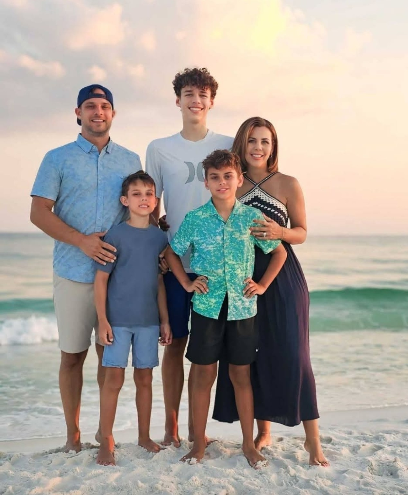
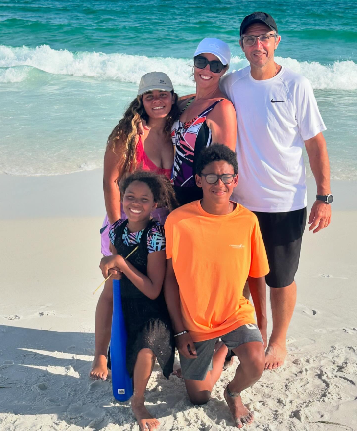
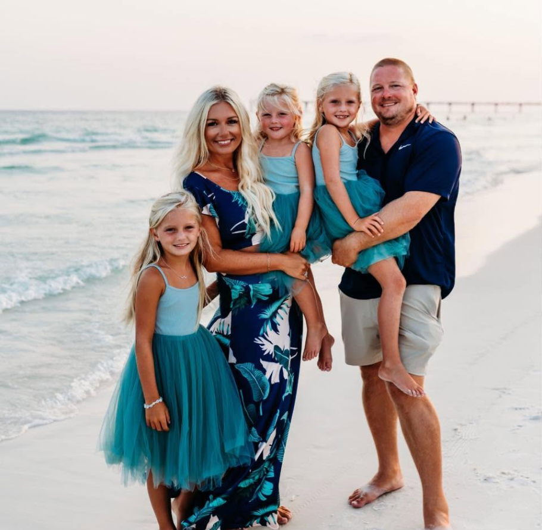
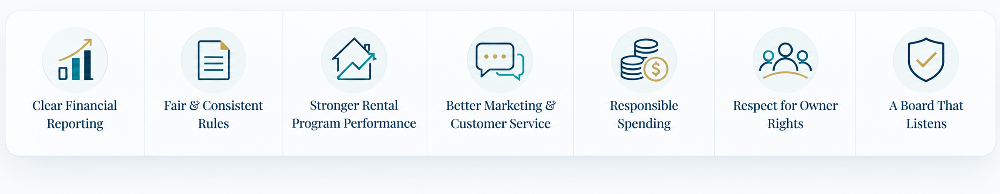

Eric Stensrud
Owner. Builder. Problem Solver.
“I’m running to bring transparency, accountability, and a practical owner-first approach to the board.”Learn More About Eric
Owners First. Every Unit. Every Decision.
Seaspray Owners First
The recent update from the current Board VP provides information on projects at Seaspray and highlights the experience of the current Board. We believe owners should receive clear updates like this regularly.
We have also shared our perspective on fresh leadership, continuity, candidate qualifications, transparency, and what an Owners First approach would mean for Seaspray.
Florida Condo Law • 2026 Owner Guide
Florida condominium law affects how associations communicate, maintain records, conduct elections, plan reserves, complete structural inspections, insure the property, and disclose information to buyers.
We created a concise owner-focused guide explaining the provisions most relevant to Seaspray, including the practical questions owners should know to ask.
Why This Election Matters
That gives Seaspray owners a real opportunity to elect new, owner-focused leadership and create a stronger future for our community.
To create meaningful change, owners should support all three owner-first candidates.
Meet the Owners First Candidates

Owner. Builder. Problem Solver.
“I’m running to bring transparency, accountability, and a practical owner-first approach to the board.”Learn More About Eric

Owner. Community Advocate.
“I’m running to significantly improve the rental program performance through operational improvements, accountability and true leadership.”Learn More About Roberto

Owner. Fresh Perspective.
“I’m committed to helping build a Seaspray that communicates better, listens to owners, and plans for the future.”Learn More About Zachary
What’s working well? What needs improvement? Share your thoughts in our short owner survey.
Take the Owner Survey →Meet Eric, Roberto, and Zachary, ask questions, share feedback, and discuss how owners can work together to make Seaspray the best place it can be for our families and guests.
Join Zoom Meeting →What Seaspray Owners Deserve

Our Day One Priorities
Questions Worth Asking
How to Vote
To create meaningful change, vote for all three owner-first candidates. Once the official election materials are issued by the Association, this section will be updated with detailed step-by-step instructions.
This website is maintained by owner-first board candidates and supporters. It is not the official website of Seaspray Condominium Association. All owners should review and follow official election materials and instructions provided by the Association.